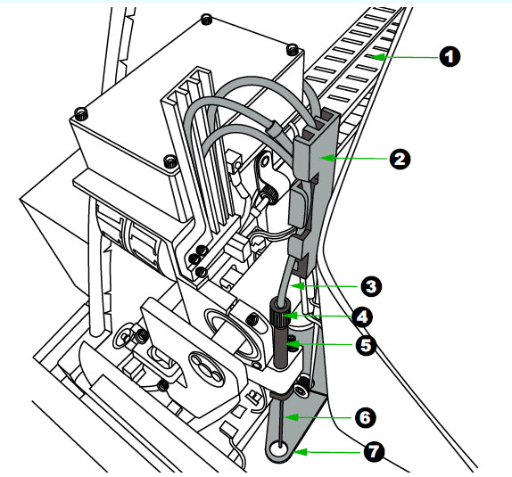

Replacing PFA Sample Probe:
This procedure describes how to remove a PFA sample probe and install a replacement PFA sample probe.
Special Notes:
- The PFA sample probe was cut into Chaska Manufacturing on the following systems:
- DxI 800 - S/N 603533 and above.
- DxI 600 - S/N 900794 and above.
- If Mod 11050 is complete, the PFA sample probe is customer replaceable.
- Customer replaceable instructions are in the Access Systems Applications database in the Sample Probe Replacement Procedure section.
- If the FSE uses a sample probe from customer inventory, order a replacement sample probe for the customer.
- The probe tubing has a Click-and-seal (CnS) fitting. The CnS wrench can be used, as needed. Details for the CnS wrench can be found in the Tool Kit, Speciality procedure.

| 1 | Track |
| 2 | Front z-guide |
| 3 | Probe tubing |
| 4 | Probe tubing fitting |
| 5 | Probe guide |
| 6 | Sample probe |
| 7 | Probe guard |
-
Remove the PFA sample probe assembly.
- Open the upper left and right front covers.
- Remove power from the motors by turning off the switch on the Power Distribution PCB labeled All DC power (except CPU and reagent coolers).
- Move the sample probe assembly to the front of the instrument.
- Place a dry paper towel underneath the probe guard to protect the top of the SPU from any residual liquid that can drip from the probe tubing.
- Remove the probe tubing from the front z-guide pathway.
- Turn the probe tubing fitting counterclockwise to disconnect the probe tubing from the probe guide.
- Push the probe up through the probe guide to remove the sample probe from the instrument.
- Dispose of the used sample probe according to local regulations.
-
Install the PFA sample probe assembly.
- Insert the new sample probe into the probe guide from the top and then lower the new sample probe into position.
- Insert the probe tubing fitting into the probe guide.
- Turn the probe tubing fitting clockwise until the fitting clicks into place.
- Route the probe tubing through the front z-guide pathway.
- Remove the paper towel.
- Restore power to the motors by turning on the switch on the Power Distribution PCB labeled All DC power (except CPU and reagent coolers).
- Close the upper left and right front covers.
-
Align the PFA sample probe assembly.
- Initialize the instrument.
-
Verify system operation.